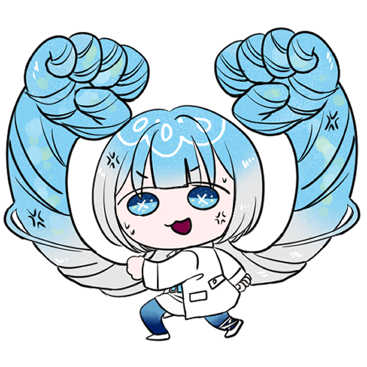

開発用表示（H で切替）
コタロ
A
D
/
←
→
移動
Space
ジャンプ（空中でもう1回）
J
攻撃
K
クラゲ電撃
L
バブルショット
I
ガード（長押し）
R
リセット
H
判定表示
T
タッチUI
左で移動・右でジャンプ／攻撃／必殺／泡／防御
コタロ WIN
もう一度
タイトルへ戻る
コタロの
大格闘
CPUと対戦
オンライン対戦

CPUの強さをえらぶ
対戦相手：ルミポ
戻る
対戦開始
A
D
移動
Space
ジャンプ
J
攻撃
K
クラゲ電撃
L
泡
I
ガード
必殺
泡
防御
攻撃
ジャンプ
スマホを横向きにして遊んでください
画面の向きのロックがオンの場合は解除してください